library(haven) # Read Stata filesWarning: package 'haven' was built under R version 4.5.2library(tidyverse) # Data wrangling and visualizationWarning: package 'tidyverse' was built under R version 4.5.3Warning: package 'ggplot2' was built under R version 4.5.3Warning: package 'tidyr' was built under R version 4.5.3Warning: package 'readr' was built under R version 4.5.3Warning: package 'dplyr' was built under R version 4.5.3Warning: package 'lubridate' was built under R version 4.5.2── Attaching core tidyverse packages ──────────────────────── tidyverse 2.0.0 ──
✔ dplyr 1.2.0 ✔ readr 2.2.0
✔ forcats 1.0.0 ✔ stringr 1.5.1
✔ ggplot2 4.0.2 ✔ tibble 3.3.0
✔ lubridate 1.9.4 ✔ tidyr 1.3.2
✔ purrr 1.1.0
── Conflicts ────────────────────────────────────────── tidyverse_conflicts() ──
✖ dplyr::filter() masks stats::filter()
✖ dplyr::lag() masks stats::lag()
ℹ Use the conflicted package (<http://conflicted.r-lib.org/>) to force all conflicts to become errorslibrary(GGally) # Pairs plotsWarning: package 'GGally' was built under R version 4.5.2library(cluster) # ClusteringWarning: package 'cluster' was built under R version 4.5.2library(factoextra) # Visualize clusters and PCAWarning: package 'factoextra' was built under R version 4.5.2Welcome to factoextra!
Want to learn more? See two factoextra-related books at https://www.datanovia.com/en/product/practical-guide-to-principal-component-methods-in-r/library(rpart) # Decision treesWarning: package 'rpart' was built under R version 4.5.2library(rpart.plot) # Plot decision treesWarning: package 'rpart.plot' was built under R version 4.5.2library(randomForest) # Random forestWarning: package 'randomForest' was built under R version 4.5.2randomForest 4.7-1.2
Type rfNews() to see new features/changes/bug fixes.
Attaching package: 'randomForest'
The following object is masked from 'package:dplyr':
combine
The following object is masked from 'package:ggplot2':
marginlibrary(caret) # Model training and evaluationWarning: package 'caret' was built under R version 4.5.2Loading required package: lattice
Attaching package: 'caret'
The following object is masked from 'package:purrr':
liftlibrary(e1071) # SVM and Naive BayesWarning: package 'e1071' was built under R version 4.5.2
Attaching package: 'e1071'
The following object is masked from 'package:ggplot2':
element# Load data
TEDS_2016 <- read_stata("https://github.com/datageneration/home/blob/master/DataProgramming/data/TEDS_2016.dta?raw=true")
# ============================================================================
# PART I: EXPLORATORY DATA ANALYSIS
# ============================================================================
# ----------------------------------------------------------------------------
# Q1. Data overview
# ----------------------------------------------------------------------------
dim(TEDS_2016)[1] 1690 54names(TEDS_2016) [1] "District" "Sex" "Age" "Edu"
[5] "Arear" "Career" "Career8" "Ethnic"
[9] "Party" "PartyID" "Tondu" "Tondu3"
[13] "nI2" "votetsai" "green" "votetsai_nm"
[17] "votetsai_all" "Independence" "Unification" "sq"
[21] "Taiwanese" "edu" "female" "whitecollar"
[25] "lowincome" "income" "income_nm" "age"
[29] "KMT" "DPP" "npp" "noparty"
[33] "pfp" "South" "north" "Minnan_father"
[37] "Mainland_father" "Econ_worse" "Inequality" "inequality5"
[41] "econworse5" "Govt_for_public" "pubwelf5" "Govt_dont_care"
[45] "highincome" "votekmt" "votekmt_nm" "Blue"
[49] "Green" "No_Party" "voteblue" "voteblue_nm"
[53] "votedpp_1" "votekmt_1" summary(TEDS_2016) District Sex Age Edu Arear
Min. : 201 Min. :1.000 Min. :1.0 Min. :1.000 Min. :1.000
1st Qu.:1401 1st Qu.:1.000 1st Qu.:2.0 1st Qu.:2.000 1st Qu.:1.000
Median :6406 Median :1.000 Median :3.0 Median :3.000 Median :3.000
Mean :4661 Mean :1.486 Mean :3.3 Mean :3.334 Mean :2.744
3rd Qu.:6604 3rd Qu.:2.000 3rd Qu.:5.0 3rd Qu.:5.000 3rd Qu.:4.000
Max. :6806 Max. :2.000 Max. :5.0 Max. :9.000 Max. :6.000
Career Career8 Ethnic Party
Min. :1.000 Min. :1.000 Min. :1.000 Min. : 1.00
1st Qu.:1.000 1st Qu.:2.000 1st Qu.:1.000 1st Qu.: 5.00
Median :2.000 Median :4.000 Median :1.000 Median : 7.00
Mean :2.683 Mean :3.811 Mean :1.658 Mean :13.02
3rd Qu.:4.000 3rd Qu.:5.000 3rd Qu.:2.000 3rd Qu.:25.00
Max. :5.000 Max. :8.000 Max. :9.000 Max. :26.00
PartyID Tondu Tondu3 nI2
Min. :1.000 Min. :1.000 Min. :1.000 Min. : 1.00
1st Qu.:2.000 1st Qu.:3.000 1st Qu.:2.000 1st Qu.: 1.00
Median :2.000 Median :4.000 Median :2.000 Median : 3.00
Mean :4.522 Mean :4.127 Mean :2.667 Mean :35.13
3rd Qu.:9.000 3rd Qu.:5.000 3rd Qu.:3.000 3rd Qu.:98.00
Max. :9.000 Max. :9.000 Max. :9.000 Max. :98.00
votetsai green votetsai_nm votetsai_all
Min. :0.0000 Min. :0.0000 Min. :0.0000 Min. :0.0000
1st Qu.:0.0000 1st Qu.:0.0000 1st Qu.:0.0000 1st Qu.:0.0000
Median :1.0000 Median :0.0000 Median :1.0000 Median :1.0000
Mean :0.6265 Mean :0.3781 Mean :0.6265 Mean :0.5478
3rd Qu.:1.0000 3rd Qu.:1.0000 3rd Qu.:1.0000 3rd Qu.:1.0000
Max. :1.0000 Max. :1.0000 Max. :1.0000 Max. :1.0000
NA's :429 NA's :429 NA's :248
Independence Unification sq Taiwanese
Min. :0.0000 Min. :0.0000 Min. :0.0000 Min. :0.0000
1st Qu.:0.0000 1st Qu.:0.0000 1st Qu.:0.0000 1st Qu.:0.0000
Median :0.0000 Median :0.0000 Median :1.0000 Median :1.0000
Mean :0.2888 Mean :0.1225 Mean :0.5172 Mean :0.6272
3rd Qu.:1.0000 3rd Qu.:0.0000 3rd Qu.:1.0000 3rd Qu.:1.0000
Max. :1.0000 Max. :1.0000 Max. :1.0000 Max. :1.0000
edu female whitecollar lowincome
Min. :1.000 Min. :0.0000 Min. :0.0000 Min. :1.000
1st Qu.:2.000 1st Qu.:0.0000 1st Qu.:0.0000 1st Qu.:4.000
Median :3.000 Median :0.0000 Median :1.0000 Median :5.000
Mean :3.301 Mean :0.4864 Mean :0.5373 Mean :4.343
3rd Qu.:5.000 3rd Qu.:1.0000 3rd Qu.:1.0000 3rd Qu.:5.000
Max. :5.000 Max. :1.0000 Max. :1.0000 Max. :5.000
NA's :10
income income_nm age KMT
Min. : 1.000 Min. : 1.000 Min. : 20.00 Min. :0.0000
1st Qu.: 3.000 1st Qu.: 2.000 1st Qu.: 35.00 1st Qu.:0.0000
Median : 5.500 Median : 5.000 Median : 49.00 Median :0.0000
Mean : 5.324 Mean : 5.281 Mean : 49.11 Mean :0.2296
3rd Qu.: 7.000 3rd Qu.: 8.000 3rd Qu.: 61.00 3rd Qu.:0.0000
Max. :10.000 Max. :10.000 Max. :100.00 Max. :1.0000
NA's :330
DPP npp noparty pfp
Min. :0.0000 Min. :0.00000 Min. :0.0000 Min. :0.00000
1st Qu.:0.0000 1st Qu.:0.00000 1st Qu.:0.0000 1st Qu.:0.00000
Median :0.0000 Median :0.00000 Median :0.0000 Median :0.00000
Mean :0.3497 Mean :0.02544 Mean :0.3716 Mean :0.01893
3rd Qu.:1.0000 3rd Qu.:0.00000 3rd Qu.:1.0000 3rd Qu.:0.00000
Max. :1.0000 Max. :1.00000 Max. :1.0000 Max. :1.00000
South north Minnan_father Mainland_father
Min. :0.0000 Min. :0.0000 Min. :0.0000 Min. :0.0000
1st Qu.:0.0000 1st Qu.:0.0000 1st Qu.:0.0000 1st Qu.:0.0000
Median :0.0000 Median :0.0000 Median :1.0000 Median :0.0000
Mean :0.4947 Mean :0.4799 Mean :0.7225 Mean :0.1024
3rd Qu.:1.0000 3rd Qu.:1.0000 3rd Qu.:1.0000 3rd Qu.:0.0000
Max. :1.0000 Max. :1.0000 Max. :1.0000 Max. :1.0000
Econ_worse Inequality inequality5 econworse5
Min. :0.0000 Min. :0.0000 Min. :1.000 Min. :1.000
1st Qu.:0.0000 1st Qu.:1.0000 1st Qu.:4.000 1st Qu.:3.000
Median :1.0000 Median :1.0000 Median :5.000 Median :4.000
Mean :0.5544 Mean :0.9355 Mean :4.495 Mean :3.644
3rd Qu.:1.0000 3rd Qu.:1.0000 3rd Qu.:5.000 3rd Qu.:4.000
Max. :1.0000 Max. :1.0000 Max. :5.000 Max. :5.000
Govt_for_public pubwelf5 Govt_dont_care highincome
Min. :0.0000 Min. :1.000 Min. :0.0000 Min. :0.0000
1st Qu.:0.0000 1st Qu.:2.000 1st Qu.:0.0000 1st Qu.:0.0000
Median :0.0000 Median :3.000 Median :0.0000 Median :1.0000
Mean :0.4249 Mean :2.877 Mean :0.4988 Mean :0.5765
3rd Qu.:1.0000 3rd Qu.:4.000 3rd Qu.:1.0000 3rd Qu.:1.0000
Max. :1.0000 Max. :5.000 Max. :1.0000 Max. :1.0000
NA's :330
votekmt votekmt_nm Blue Green No_Party
Min. :0.0000 Min. :0.0000 Min. :0 Min. :0 Min. :0
1st Qu.:0.0000 1st Qu.:0.0000 1st Qu.:0 1st Qu.:0 1st Qu.:0
Median :0.0000 Median :0.0000 Median :0 Median :0 Median :0
Mean :0.2053 Mean :0.2752 Mean :0 Mean :0 Mean :0
3rd Qu.:0.0000 3rd Qu.:1.0000 3rd Qu.:0 3rd Qu.:0 3rd Qu.:0
Max. :1.0000 Max. :1.0000 Max. :0 Max. :0 Max. :0
NA's :429
voteblue voteblue_nm votedpp_1 votekmt_1
Min. :0.0000 Min. :0.0000 Min. :0.0000 Min. :0.0000
1st Qu.:0.0000 1st Qu.:0.0000 1st Qu.:0.0000 1st Qu.:0.0000
Median :0.0000 Median :0.0000 Median :1.0000 Median :0.0000
Mean :0.2787 Mean :0.3735 Mean :0.5256 Mean :0.2309
3rd Qu.:1.0000 3rd Qu.:1.0000 3rd Qu.:1.0000 3rd Qu.:0.0000
Max. :1.0000 Max. :1.0000 Max. :1.0000 Max. :1.0000
NA's :429 NA's :187 NA's :187 # ----------------------------------------------------------------------------
# Q2. Missing data assessment
# ----------------------------------------------------------------------------
TEDS_2016 %>%
summarise(across(everything(), ~sum(is.na(.)))) %>%
pivot_longer(everything(),
names_to = "variable",
values_to = "n_missing") %>%
filter(n_missing > 0) %>%
arrange(desc(n_missing))# A tibble: 10 × 2
variable n_missing
<chr> <int>
1 votetsai 429
2 votetsai_nm 429
3 votekmt_nm 429
4 voteblue_nm 429
5 income_nm 330
6 highincome 330
7 votetsai_all 248
8 votedpp_1 187
9 votekmt_1 187
10 edu 10# Visualize missingness
TEDS_2016 %>%
summarise(across(everything(), ~sum(is.na(.)))) %>%
pivot_longer(everything(),
names_to = "variable",
values_to = "n_missing") %>%
filter(n_missing > 0) %>%
ggplot(aes(x = reorder(variable, n_missing), y = n_missing)) +
geom_col(fill = "steelblue") +
coord_flip() +
labs(title = "Missing Values by Variable",
x = NULL, y = "Count of Missing Values") +
theme_minimal(base_size = 18)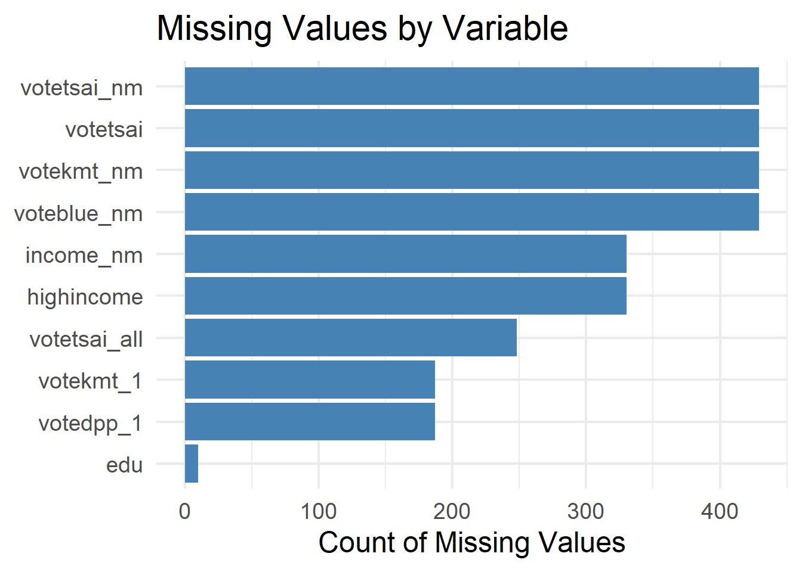
# ----------------------------------------------------------------------------
# Q3. Variable recoding
# ----------------------------------------------------------------------------
teds <- TEDS_2016 %>%
mutate(
vote = factor(votetsai,
levels = c(0, 1),
labels = c("Other", "Tsai")),
gender = factor(female,
levels = c(0, 1),
labels = c("Male", "Female")),
Tondu = as.factor(Tondu),
Party = as.factor(Party)
) %>%
dplyr::select(vote, gender, age, edu, income,
Taiwanese, Econ_worse, Tondu, Party, DPP) %>%
drop_na()
glimpse(teds)Rows: 1,257
Columns: 10
$ vote <fct> Tsai, Other, Tsai, Tsai, Tsai, Tsai, Tsai, Tsai, Other, Oth…
$ gender <fct> Female, Male, Female, Male, Female, Female, Male, Female, F…
$ age <dbl> 39, 63, 64, 75, 54, 64, 66, 25, 41, 57, 83, 43, 44, 34, 28,…
$ edu <dbl> 5, 5, 2, 1, 5, 1, 1, 2, 5, 5, 1, 5, 5, 3, 3, 3, 3, 1, 5, 3,…
$ income <dbl> 7.0, 8.0, 9.0, 1.0, 10.0, 2.0, 3.0, 5.5, 9.0, 1.0, 5.5, 5.0…
$ Taiwanese <dbl> 0, 0, 1, 0, 1, 1, 1, 1, 1, 0, 0, 1, 1, 1, 0, 0, 0, 0, 0, 1,…
$ Econ_worse <dbl> 0, 1, 1, 1, 1, 1, 1, 0, 0, 1, 0, 1, 1, 0, 0, 0, 1, 0, 1, 0,…
$ Tondu <fct> 5, 3, 4, 9, 6, 9, 5, 5, 5, 4, 9, 3, 5, 3, 3, 4, 1, 1, 4, 3,…
$ Party <fct> 25, 3, 6, 25, 24, 25, 6, 5, 3, 3, 25, 23, 7, 3, 25, 2, 10, …
$ DPP <dbl> 0, 0, 1, 0, 0, 0, 1, 1, 0, 0, 0, 0, 1, 0, 0, 0, 0, 0, 0, 1,…# ----------------------------------------------------------------------------
# Q4. Vote choice distribution
# ----------------------------------------------------------------------------
ggplot(teds, aes(x = vote, fill = vote)) +
geom_bar() +
scale_fill_manual(values = c("Other" = "#2980b9", "Tsai" = "#27ae60")) +
labs(title = "Vote Choice Distribution",
subtitle = "TEDS 2016: Tsai Ing-wen vs. Other Candidates",
x = "Vote Choice", y = "Count") +
theme_minimal(base_size = 18) +
theme(legend.position = "none")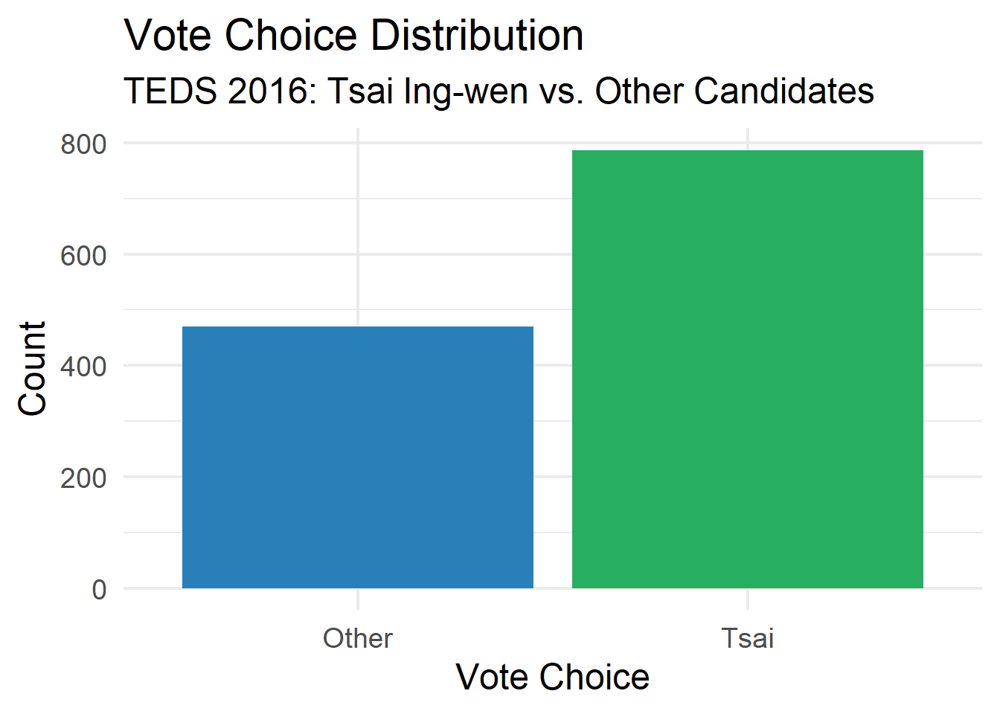
# ----------------------------------------------------------------------------
# Q5. Age distribution
# ----------------------------------------------------------------------------
ggplot(teds, aes(x = age)) +
geom_histogram(binwidth = 5, fill = "steelblue", color = "white") +
labs(title = "Age Distribution of Respondents",
x = "Age", y = "Count") +
theme_minimal(base_size = 18)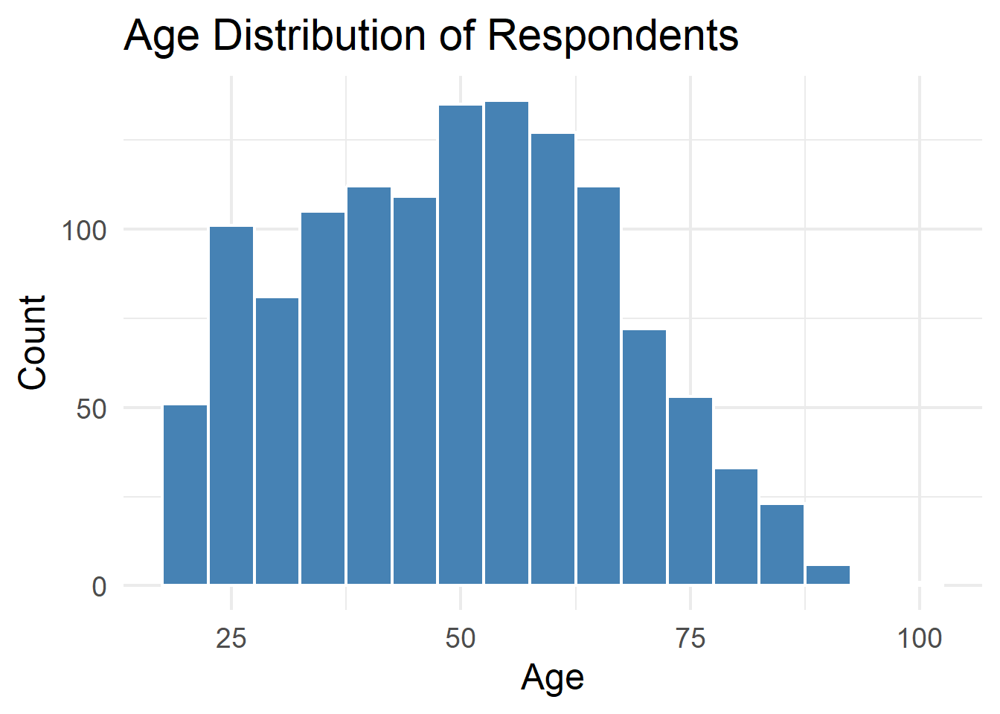
# ----------------------------------------------------------------------------
# Q6. Vote by gender
# ----------------------------------------------------------------------------
ggplot(teds, aes(x = gender, fill = vote)) +
geom_bar(position = "fill") +
scale_fill_manual(values = c("Other" = "#2980b9", "Tsai" = "#27ae60")) +
labs(title = "Vote Choice by Gender",
x = "Gender", y = "Proportion",
fill = "Vote") +
theme_minimal(base_size = 18)
# ----------------------------------------------------------------------------
# Q7. Age by vote choice
# ----------------------------------------------------------------------------
ggplot(teds, aes(x = vote, y = age, fill = vote)) +
geom_boxplot() +
scale_fill_manual(values = c("Other" = "#2980b9", "Tsai" = "#27ae60")) +
labs(title = "Age Distribution by Vote Choice",
x = "Vote Choice", y = "Age") +
theme_minimal(base_size = 18) +
theme(legend.position = "none")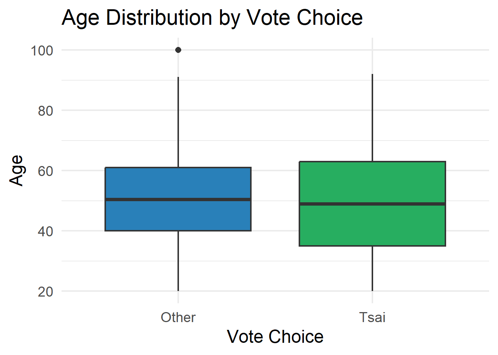
# ----------------------------------------------------------------------------
# Q8. Correlation matrix
# ----------------------------------------------------------------------------
teds %>%
dplyr::select(age, edu, income, Taiwanese, Econ_worse, DPP) %>%
cor(use = "complete.obs") %>%
as.data.frame() %>%
rownames_to_column("var1") %>%
pivot_longer(-var1, names_to = "var2", values_to = "cor") %>%
ggplot(aes(x = var1, y = var2, fill = cor)) +
geom_tile() +
geom_text(aes(label = round(cor, 2)), size = 6) +
scale_fill_gradient2(low = "#e74c3c", mid = "white", high = "#2980b9",
midpoint = 0, limits = c(-1, 1)) +
labs(title = "Correlation Matrix of Numeric Variables",
x = NULL, y = NULL) +
theme_minimal(base_size = 18) +
theme(axis.text.x = element_text(angle = 45, hjust = 1))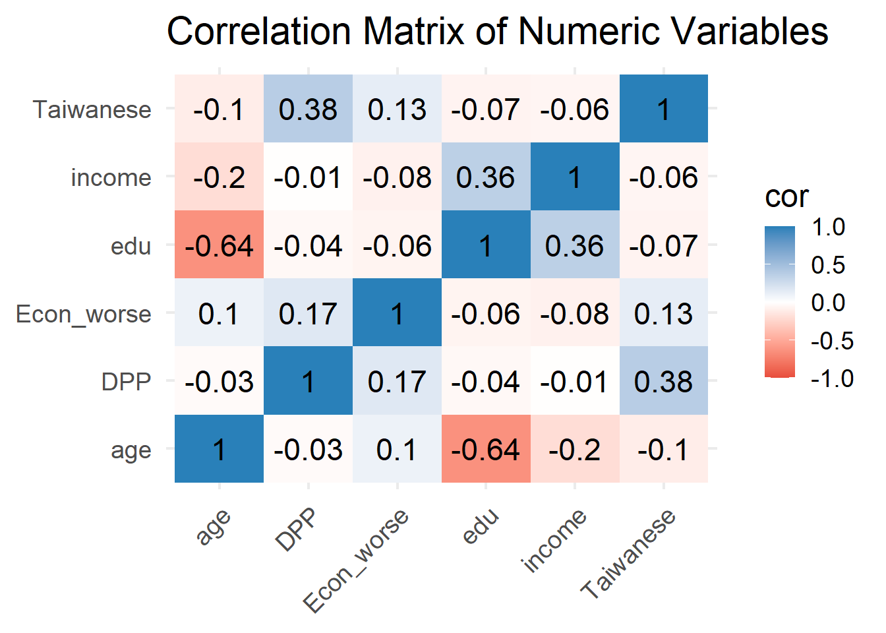
# ----------------------------------------------------------------------------
# Q9. Pairs plot
# ----------------------------------------------------------------------------
teds %>%
dplyr::select(age, edu, income, Taiwanese, Econ_worse, vote) %>%
ggpairs(aes(color = vote, alpha = 0.5),
upper = list(continuous = wrap("cor", size = 4)),
lower = list(continuous = wrap("points", size = 0.5))) +
scale_color_manual(values = c("Other" = "#2980b9", "Tsai" = "#27ae60")) +
scale_fill_manual(values = c("Other" = "#2980b9", "Tsai" = "#27ae60")) +
theme_minimal(base_size = 14)Warning: No shared levels found between `names(values)` of the manual scale and the
data's colour values.Warning: No shared levels found between `names(values)` of the manual scale and the
data's colour values.Warning: No shared levels found between `names(values)` of the manual scale and the
data's fill values.Warning: No shared levels found between `names(values)` of the manual scale and the
data's colour values.
No shared levels found between `names(values)` of the manual scale and the
data's colour values.Warning: No shared levels found between `names(values)` of the manual scale and the
data's fill values.Warning: No shared levels found between `names(values)` of the manual scale and the
data's colour values.
No shared levels found between `names(values)` of the manual scale and the
data's colour values.Warning: No shared levels found between `names(values)` of the manual scale and the
data's fill values.Warning: No shared levels found between `names(values)` of the manual scale and the
data's colour values.
No shared levels found between `names(values)` of the manual scale and the
data's colour values.Warning: No shared levels found between `names(values)` of the manual scale and the
data's fill values.Warning: No shared levels found between `names(values)` of the manual scale and the
data's colour values.
No shared levels found between `names(values)` of the manual scale and the
data's colour values.Warning: No shared levels found between `names(values)` of the manual scale and the
data's fill values.Warning: No shared levels found between `names(values)` of the manual scale and the
data's colour values.
No shared levels found between `names(values)` of the manual scale and the
data's colour values.Warning: No shared levels found between `names(values)` of the manual scale and the
data's fill values.Warning: No shared levels found between `names(values)` of the manual scale and the
data's colour values.
No shared levels found between `names(values)` of the manual scale and the
data's colour values.Warning: No shared levels found between `names(values)` of the manual scale and the
data's fill values.Warning: No shared levels found between `names(values)` of the manual scale and the
data's colour values.
No shared levels found between `names(values)` of the manual scale and the
data's colour values.Warning: No shared levels found between `names(values)` of the manual scale and the
data's fill values.Warning: No shared levels found between `names(values)` of the manual scale and the
data's colour values.
No shared levels found between `names(values)` of the manual scale and the
data's colour values.Warning: No shared levels found between `names(values)` of the manual scale and the
data's fill values.
No shared levels found between `names(values)` of the manual scale and the
data's fill values.Warning: No shared levels found between `names(values)` of the manual scale and the
data's colour values.
No shared levels found between `names(values)` of the manual scale and the
data's colour values.Warning: No shared levels found between `names(values)` of the manual scale and the
data's fill values.Warning: No shared levels found between `names(values)` of the manual scale and the
data's colour values.
No shared levels found between `names(values)` of the manual scale and the
data's colour values.Warning: No shared levels found between `names(values)` of the manual scale and the
data's fill values.Warning: No shared levels found between `names(values)` of the manual scale and the
data's colour values.
No shared levels found between `names(values)` of the manual scale and the
data's colour values.Warning: No shared levels found between `names(values)` of the manual scale and the
data's fill values.
No shared levels found between `names(values)` of the manual scale and the
data's fill values.
No shared levels found between `names(values)` of the manual scale and the
data's fill values.Warning: No shared levels found between `names(values)` of the manual scale and the
data's colour values.
No shared levels found between `names(values)` of the manual scale and the
data's colour values.Warning: No shared levels found between `names(values)` of the manual scale and the
data's fill values.Warning: No shared levels found between `names(values)` of the manual scale and the
data's colour values.
No shared levels found between `names(values)` of the manual scale and the
data's colour values.Warning: No shared levels found between `names(values)` of the manual scale and the
data's fill values.
No shared levels found between `names(values)` of the manual scale and the
data's fill values.
No shared levels found between `names(values)` of the manual scale and the
data's fill values.
No shared levels found between `names(values)` of the manual scale and the
data's fill values.Warning: No shared levels found between `names(values)` of the manual scale and the
data's colour values.
No shared levels found between `names(values)` of the manual scale and the
data's colour values.`stat_bin()` using `bins = 30`. Pick better value `binwidth`.Warning: No shared levels found between `names(values)` of the manual scale and the
data's colour values.`stat_bin()` using `bins = 30`. Pick better value `binwidth`.Warning: No shared levels found between `names(values)` of the manual scale and the
data's colour values.`stat_bin()` using `bins = 30`. Pick better value `binwidth`.Warning: No shared levels found between `names(values)` of the manual scale and the
data's colour values.`stat_bin()` using `bins = 30`. Pick better value `binwidth`.Warning: No shared levels found between `names(values)` of the manual scale and the
data's colour values.`stat_bin()` using `bins = 30`. Pick better value `binwidth`.Warning: No shared levels found between `names(values)` of the manual scale and the
data's colour values.
No shared levels found between `names(values)` of the manual scale and the
data's colour values.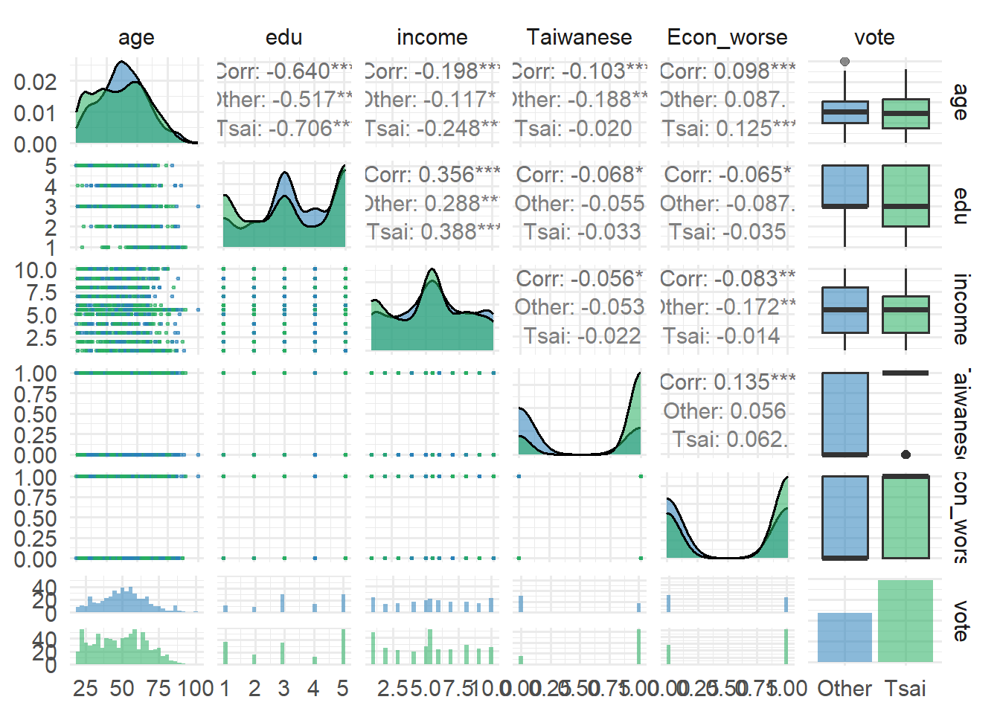
# ============================================================================
# PART II: UNSUPERVISED LEARNING
# ============================================================================
# ----------------------------------------------------------------------------
# Prepare data for clustering
# ----------------------------------------------------------------------------
teds_numeric <- teds %>%
dplyr::select(age, edu, income, Taiwanese, Econ_worse, DPP) %>%
scale() %>%
as.data.frame()
head(teds_numeric) age edu income Taiwanese Econ_worse DPP
1 -0.6442434 1.1180557 0.5890616 -1.352636 -1.1612317 -0.8507077
2 0.7997042 1.1180557 0.9453043 -1.352636 0.8604695 -0.8507077
3 0.8598687 -0.8791912 1.3015470 0.738709 0.8604695 1.1745567
4 1.5216780 -1.5449401 -1.5483945 -1.352636 0.8604695 -0.8507077
5 0.2582239 1.1180557 1.6577897 0.738709 0.8604695 -0.8507077
6 0.8598687 -1.5449401 -1.1921518 0.738709 0.8604695 -0.8507077# ----------------------------------------------------------------------------
# Q10. Choosing k: Elbow method
# ----------------------------------------------------------------------------
fviz_nbclust(teds_numeric, kmeans, method = "wss", k.max = 10) +
labs(title = "Elbow Method: Optimal Number of Clusters") +
theme_minimal(base_size = 18)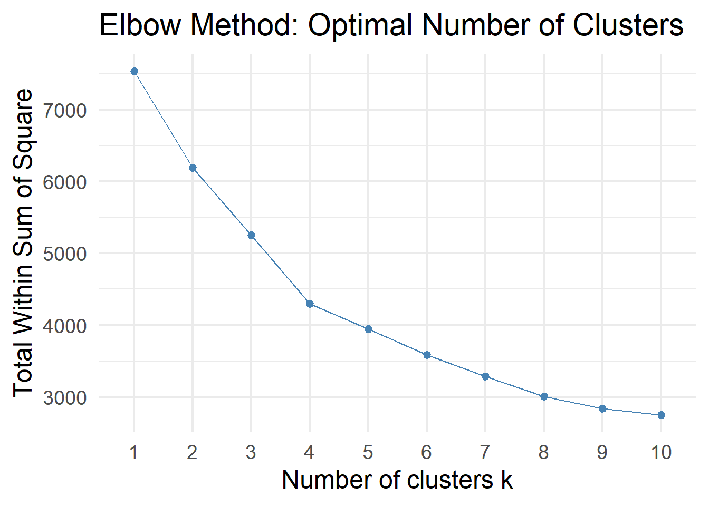
# Silhouette method
fviz_nbclust(teds_numeric, kmeans, method = "silhouette", k.max = 10) +
labs(title = "Silhouette Method: Optimal Number of Clusters") +
theme_minimal(base_size = 18)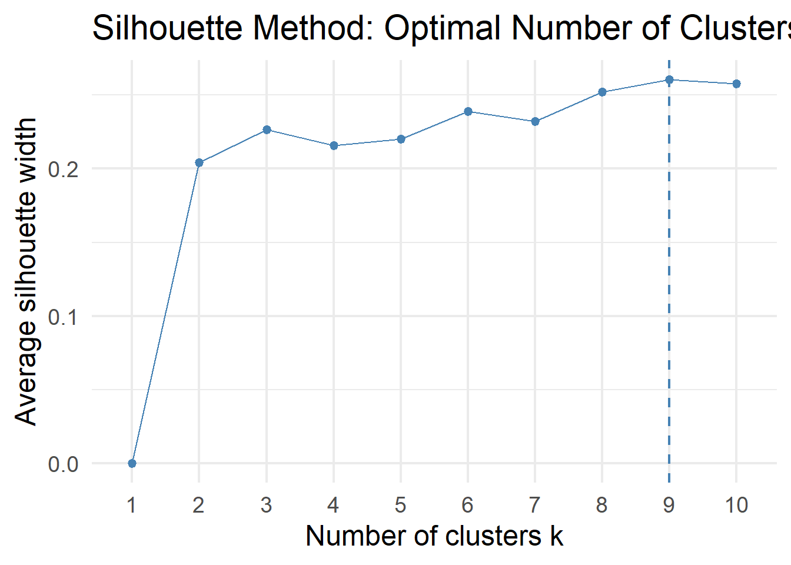
# ----------------------------------------------------------------------------
# Q11. K-Means clustering
# ----------------------------------------------------------------------------
set.seed(6323)
km_result <- kmeans(teds_numeric, centers = 3, nstart = 25)
table(km_result$cluster)
1 2 3
400 442 415 round(km_result$centers, 2) age edu income Taiwanese Econ_worse DPP
1 0.11 0.17 0.15 -1.35 -0.26 -0.62
2 -0.80 0.75 0.37 0.69 -0.05 0.24
3 0.74 -0.96 -0.54 0.57 0.31 0.35# Visualize clusters
fviz_cluster(km_result, data = teds_numeric,
geom = "point",
ellipse.type = "convex",
palette = c("#e74c3c", "#2980b9", "#27ae60"),
ggtheme = theme_minimal(base_size = 18)) +
labs(title = "K-Means Clustering of TEDS 2016 Voters (k = 3)")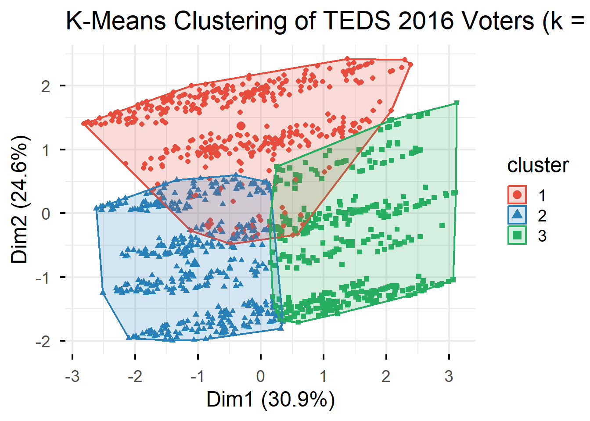
# ----------------------------------------------------------------------------
# Q12. Cluster profiling
# ----------------------------------------------------------------------------
teds$cluster <- as.factor(km_result$cluster)
teds %>%
group_by(cluster) %>%
summarise(
n = n(),
mean_age = round(mean(age), 1),
mean_edu = round(mean(edu), 1),
mean_income = round(mean(income), 1),
pct_Taiwanese = round(mean(Taiwanese) * 100, 1),
pct_Econ_worse = round(mean(Econ_worse) * 100, 1),
mean_DPP = round(mean(DPP), 2),
pct_Tsai = round(mean(vote == "Tsai") * 100, 1)
)# A tibble: 3 × 9
cluster n mean_age mean_edu mean_income pct_Taiwanese pct_Econ_worse
<fct> <int> <dbl> <dbl> <dbl> <dbl> <dbl>
1 1 400 51.6 3.6 5.8 0 44.5
2 2 442 36.4 4.4 6.4 97.5 54.8
3 3 415 62 1.9 3.8 92 72.8
# ℹ 2 more variables: mean_DPP <dbl>, pct_Tsai <dbl># ----------------------------------------------------------------------------
# Q13. Clusters vs. vote choice
# ----------------------------------------------------------------------------
ggplot(teds, aes(x = cluster, fill = vote)) +
geom_bar(position = "fill") +
scale_fill_manual(values = c("Other" = "#2980b9", "Tsai" = "#27ae60")) +
labs(title = "Vote Choice Distribution by Cluster",
x = "Cluster", y = "Proportion",
fill = "Vote") +
theme_minimal(base_size = 18)
# ----------------------------------------------------------------------------
# Q14. Principal Component Analysis
# ----------------------------------------------------------------------------
pca_result <- prcomp(teds_numeric, scale. = TRUE)
summary(pca_result)Importance of components:
PC1 PC2 PC3 PC4 PC5 PC6
Standard deviation 1.3621 1.2153 0.9492 0.9141 0.7843 0.5623
Proportion of Variance 0.3092 0.2461 0.1502 0.1393 0.1025 0.0527
Cumulative Proportion 0.3092 0.5554 0.7055 0.8448 0.9473 1.0000# Scree plot
fviz_eig(pca_result, addlabels = TRUE) +
labs(title = "Scree Plot: Variance Explained by Each PC") +
theme_minimal(base_size = 18)
# ----------------------------------------------------------------------------
# Q15. PCA variable contributions
# ----------------------------------------------------------------------------
fviz_pca_var(pca_result,
col.var = "contrib",
gradient.cols = c("#00AFBB", "#E7B800", "#FC4E07"),
repel = TRUE) +
labs(title = "PCA: Variable Contributions") +
theme_minimal(base_size = 18)
# PCA individuals by vote
fviz_pca_ind(pca_result,
geom = "point",
col.ind = teds$vote,
palette = c("#2980b9", "#27ae60"),
addEllipses = TRUE,
legend.title = "Vote") +
labs(title = "PCA: Voters Projected onto First Two PCs") +
theme_minimal(base_size = 18)Ignoring unknown labels:
• linetype : "Vote"
# ============================================================================
# PART III: SUPERVISED LEARNING
# ============================================================================
# ----------------------------------------------------------------------------
# Q16. Train-test split
# ----------------------------------------------------------------------------
set.seed(6323)
train_index <- createDataPartition(teds$vote, p = 0.7, list = FALSE)
train_data <- teds[train_index, ] %>% dplyr::select(-cluster)
test_data <- teds[-train_index, ] %>% dplyr::select(-cluster)
cat("Training set:", nrow(train_data), "observations\n")Training set: 880 observationscat("Test set:", nrow(test_data), "observations\n")Test set: 377 observationsprop.table(table(train_data$vote))
Other Tsai
0.3738636 0.6261364 # ----------------------------------------------------------------------------
# Q17. Logistic regression
# ----------------------------------------------------------------------------
logit_model <- glm(vote ~ age + gender + edu + income +
Taiwanese + Econ_worse + DPP,
data = train_data,
family = binomial)
summary(logit_model)
Call:
glm(formula = vote ~ age + gender + edu + income + Taiwanese +
Econ_worse + DPP, family = binomial, data = train_data)
Coefficients:
Estimate Std. Error z value Pr(>|z|)
(Intercept) 0.361867 0.642494 0.563 0.57328
age -0.016301 0.007529 -2.165 0.03038 *
genderFemale -0.349449 0.198576 -1.760 0.07845 .
edu -0.236898 0.089984 -2.633 0.00847 **
income -0.017889 0.036531 -0.490 0.62435
Taiwanese 1.483033 0.200581 7.394 1.43e-13 ***
Econ_worse 0.340277 0.193553 1.758 0.07874 .
DPP 3.620753 0.315087 11.491 < 2e-16 ***
---
Signif. codes: 0 '***' 0.001 '**' 0.01 '*' 0.05 '.' 0.1 ' ' 1
(Dispersion parameter for binomial family taken to be 1)
Null deviance: 1163.32 on 879 degrees of freedom
Residual deviance: 682.87 on 872 degrees of freedom
AIC: 698.87
Number of Fisher Scoring iterations: 6# Evaluation
logit_probs <- predict(logit_model, newdata = test_data, type = "response")
logit_pred <- ifelse(logit_probs > 0.5, "Tsai", "Other")
logit_pred <- factor(logit_pred, levels = c("Other", "Tsai"))
confusionMatrix(logit_pred, test_data$vote)Confusion Matrix and Statistics
Reference
Prediction Other Tsai
Other 104 40
Tsai 37 196
Accuracy : 0.7958
95% CI : (0.7515, 0.8353)
No Information Rate : 0.626
P-Value [Acc > NIR] : 8.186e-13
Kappa : 0.5657
Mcnemar's Test P-Value : 0.8197
Sensitivity : 0.7376
Specificity : 0.8305
Pos Pred Value : 0.7222
Neg Pred Value : 0.8412
Prevalence : 0.3740
Detection Rate : 0.2759
Detection Prevalence : 0.3820
Balanced Accuracy : 0.7840
'Positive' Class : Other
# ----------------------------------------------------------------------------
# Q18. Decision tree
# ----------------------------------------------------------------------------
tree_model <- rpart(vote ~ age + gender + edu + income +
Taiwanese + Econ_worse + DPP,
data = train_data,
method = "class")
rpart.plot(tree_model,
type = 4,
extra = 104,
main = "Decision Tree: Predicting Vote Choice",
box.palette = "BuGn",
cex = 1.2)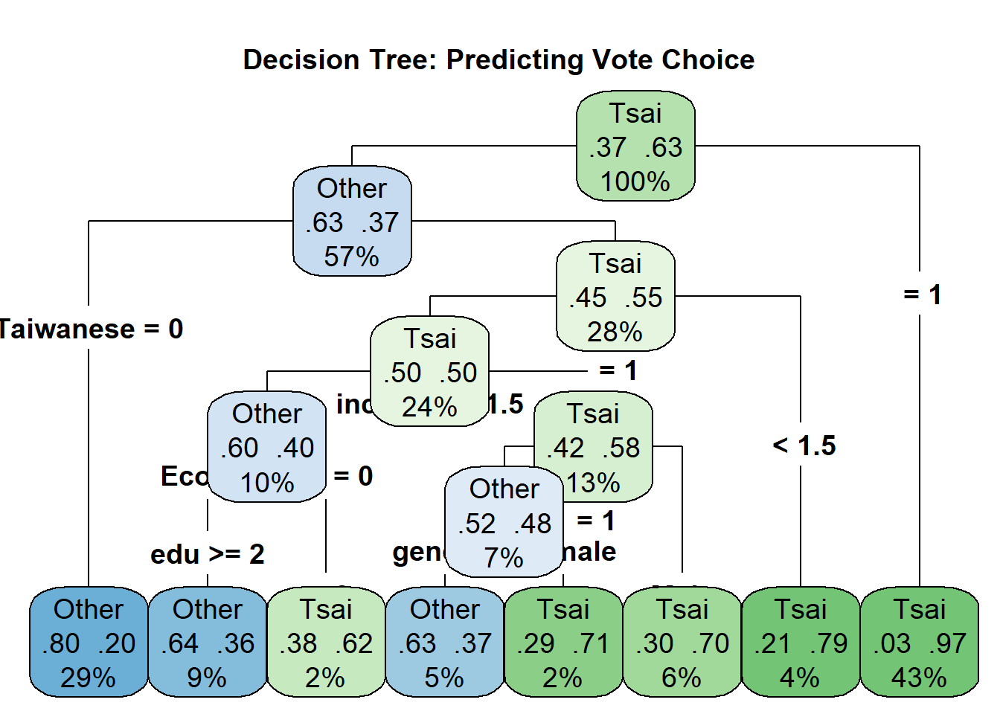
# Evaluation
tree_pred <- predict(tree_model, newdata = test_data, type = "class")
confusionMatrix(tree_pred, test_data$vote)Confusion Matrix and Statistics
Reference
Prediction Other Tsai
Other 118 54
Tsai 23 182
Accuracy : 0.7958
95% CI : (0.7515, 0.8353)
No Information Rate : 0.626
P-Value [Acc > NIR] : 8.186e-13
Kappa : 0.5823
Mcnemar's Test P-Value : 0.0006289
Sensitivity : 0.8369
Specificity : 0.7712
Pos Pred Value : 0.6860
Neg Pred Value : 0.8878
Prevalence : 0.3740
Detection Rate : 0.3130
Detection Prevalence : 0.4562
Balanced Accuracy : 0.8040
'Positive' Class : Other
# ----------------------------------------------------------------------------
# Q19. Random forest
# ----------------------------------------------------------------------------
set.seed(6323)
rf_model <- randomForest(vote ~ age + gender + edu + income +
Taiwanese + Econ_worse + DPP,
data = train_data,
ntree = 500,
importance = TRUE)
print(rf_model)
Call:
randomForest(formula = vote ~ age + gender + edu + income + Taiwanese + Econ_worse + DPP, data = train_data, ntree = 500, importance = TRUE)
Type of random forest: classification
Number of trees: 500
No. of variables tried at each split: 2
OOB estimate of error rate: 19.77%
Confusion matrix:
Other Tsai class.error
Other 245 84 0.2553191
Tsai 90 461 0.1633394# Evaluation
rf_pred <- predict(rf_model, newdata = test_data)
confusionMatrix(rf_pred, test_data$vote)Confusion Matrix and Statistics
Reference
Prediction Other Tsai
Other 111 40
Tsai 30 196
Accuracy : 0.8143
95% CI : (0.7713, 0.8523)
No Information Rate : 0.626
P-Value [Acc > NIR] : 1.408e-15
Kappa : 0.609
Mcnemar's Test P-Value : 0.2821
Sensitivity : 0.7872
Specificity : 0.8305
Pos Pred Value : 0.7351
Neg Pred Value : 0.8673
Prevalence : 0.3740
Detection Rate : 0.2944
Detection Prevalence : 0.4005
Balanced Accuracy : 0.8089
'Positive' Class : Other
# ----------------------------------------------------------------------------
# Q20. Variable importance
# ----------------------------------------------------------------------------
importance_df <- as.data.frame(importance(rf_model)) %>%
rownames_to_column("variable") %>%
arrange(desc(MeanDecreaseGini))
ggplot(importance_df, aes(x = reorder(variable, MeanDecreaseGini),
y = MeanDecreaseGini)) +
geom_col(fill = "steelblue") +
coord_flip() +
labs(title = "Random Forest: Variable Importance",
subtitle = "Mean Decrease in Gini Index",
x = NULL, y = "Importance") +
theme_minimal(base_size = 18)
# ----------------------------------------------------------------------------
# Q21. Model comparison
# ----------------------------------------------------------------------------
results <- tibble(
Model = c("Logistic Regression", "Decision Tree", "Random Forest"),
Accuracy = c(
confusionMatrix(logit_pred, test_data$vote)$overall["Accuracy"],
confusionMatrix(tree_pred, test_data$vote)$overall["Accuracy"],
confusionMatrix(rf_pred, test_data$vote)$overall["Accuracy"]
)
)
results %>% arrange(desc(Accuracy))# A tibble: 3 × 2
Model Accuracy
<chr> <dbl>
1 Random Forest 0.814
2 Logistic Regression 0.796
3 Decision Tree 0.796# Comparison plot
ggplot(results, aes(x = reorder(Model, Accuracy), y = Accuracy, fill = Model)) +
geom_col(width = 0.6) +
geom_text(aes(label = paste0(round(Accuracy * 100, 1), "%")),
hjust = -0.1, size = 7) +
coord_flip() +
scale_fill_manual(values = c("#e74c3c", "#2980b9", "#27ae60")) +
scale_y_continuous(limits = c(0, 1), labels = scales::percent) +
labs(title = "Model Comparison: Prediction Accuracy",
x = NULL, y = "Accuracy") +
theme_minimal(base_size = 18) +
theme(legend.position = "none")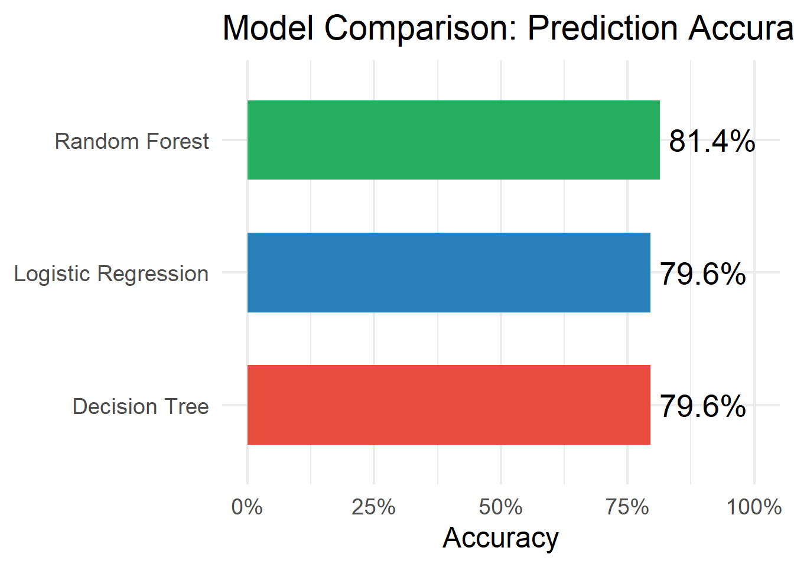